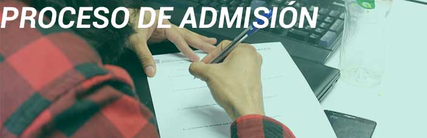

A todos los estudiantes egresados del nivel medio superior pueden participar en el proceso deselección para el ingreso del ciclo
escolar.
Requisitos
Original y dos copias tamaño carta de:
- Acta de nacimiento.
- CURP.
- Certificado de bachillerato o constancia de estudios
- Comprobante de domicilio (INE o recibo telefónico)
- Tres fotografías tamaño infantil (color o b/n).
- Comprobante de pago de examen de admisión.
- Pre ficha de examen de admisón.
- Presentar examen de admisión.
Se debe tener la documentación completa para realizar el trámite de registro.
Trámite de preinscripción:
- Obtén tu formato de pago en la página del Gobierno del Estado de México: www.edomex.gob.mx
- Imprime tu recibo y realiza tu pago en alguno de los bancos o comercios mencionados en tu formato de pago. IMPORTANTE:se debe realizar el pago cuatro días de iniciar el trámite
- Entra al SAITESH en el apartado de aspirantes para llenar tu formulario e imprimir tu pre-ficha de examen.
- Acude a la ventanilla de Control Escolar con tu pago, pre-ficha de examen y los documentos requeridos.
- Período de Preinscripción: consulte las fechas establecidas en la convocatoria.
- Fecha del examen de admisión: consulte las fechas de cada etapa establecidas en la convocatoria.
- Fecha de publicación de resultados: consulte las fechas de los resultados de examen.
